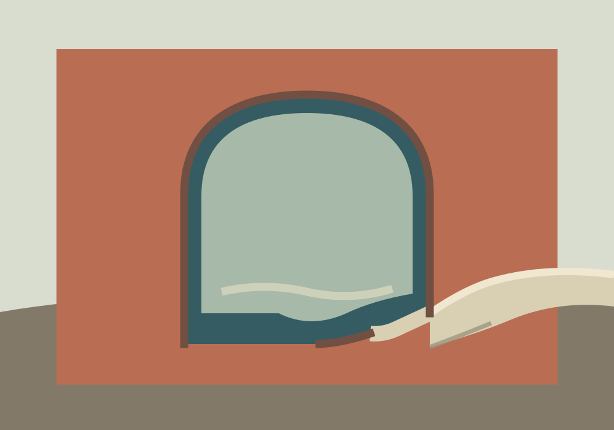

Vyt Aitken · edges in company · 15 October 2026
The Fold Keeps the Opening

A pale folded plane enters the arched opening and carries a short part of its lower edge. The dark cut returns on either side. The fold may still read as a floor escaping the wall; I leave that uncertainty visible.
Back to the studio.